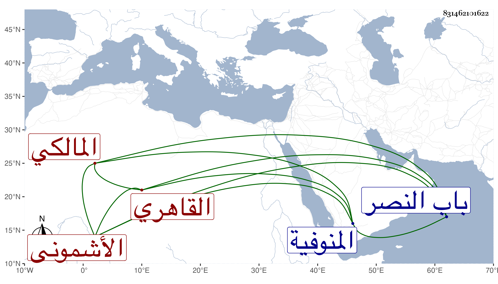

0902Sakhawi.DawLamic.ITO20230111-ara1.EIS1600.831462101622
Biography ID: 831462101622
1045
محمد بن أحمد بن عبد الدائم الشمس الأشموني ثم القاهري المالكي ابن أخت الشيخ مدين ووالد أحمد الماضي ويعرف بين جماعة خاله بابن عبد الدائم . ولد في سنة أربع عشرة وثمانمائة بأشمون جريس من المنوفية ونشأ بها فحفظ القرآن وتلاه فيما قال مع جميع ما أثبته في ترجمته تجويدا وكذا لابن كثير على التاج بن تمرية ولأبي عمرو على الزين طاهر وحفظ الرسالة وابن الحاجب الفرعي والأصلي إلا قليلا منه وألفية ابن ملك ولازم الزين عبادة في الفقه وكذا أخذ عن البساطي جانبا من مختصر الفقيه خليل وقرأ في العربية على البرهان بن حجاج الأبناسي والصحيحين على البدر بن التنسي والشفا على الولوي االسنباطي والرسالة القشيرية والعوارف السهروردية على الزين الفاقوسي وسمع على الشلقامي والتلواني والرشيدي والمناوي وابن حريز والبخاري على المشايخ الأربعة عشر بالظاهرية القديمة في آخرين سماهم استدللت بنفيه في البخاري بخصوصه لكوني كنت الضابط فيه على اختلال باقيه وصحب خاله وتلقن منه واختلى عنده وألبسه الخرقة وأذن له في ذلك وتصدى له بعده بل ولقن في حياته جمعا من النسوة ونحوهن ، وهو ممن صحبه بعده الزين عبد الرحيم الأبناسي وهو الذي نوه بذكره وبالغ في إطرائه ، ورام بعد موت خاله الإقامة بزاوية عبد الرحمن بن بكتمر التي كانت إقامة خاله أولا بها فما مكن ثم لا زال يتنقل من مكان إلى مكان حتى استقر بالمدرسة البقرية داخل باب النصر وله الخلاصة المرضية في سلوك طريق الصوفية يشتمل على أبواب قرضها له العبادي والحصني وزكريا والزين الأبناسي والكافياجي والزين قاسم وابن الغرس والسنهوري ، وبالجملة فهو كثير الذكر والتلاوة مع مزيد التواضع والاحتمال والرغبة في إلفات الناس للأخذ عنه والتردد إليهم لذلك والمبالغة فيه حتى لمن لا يناسبه حاله ، وقد حضر عندي عدة مجالس في الإملاء وسألني عن غير حديث وتبرم عندي مما يخالف عقيدة أهل السنة وحلف على ذلك . تعلل مدة بضيق النفس والربو والسعال ونحوها . ومات في ليلة الثلاثاء سادس جمادى الأولى سنة إحدى وثمانين وصلي عليه من الغد في جمع متوسط تجاه مصلى باب النصر ودفن بتربة فقراء خاله وقام بتكفينة وتجهيزه تغرى بردى القادري خازندار الدوادار الكبير وكان التاج بن المقسي القائم بأكثر كلفه عفا الله عنه .
